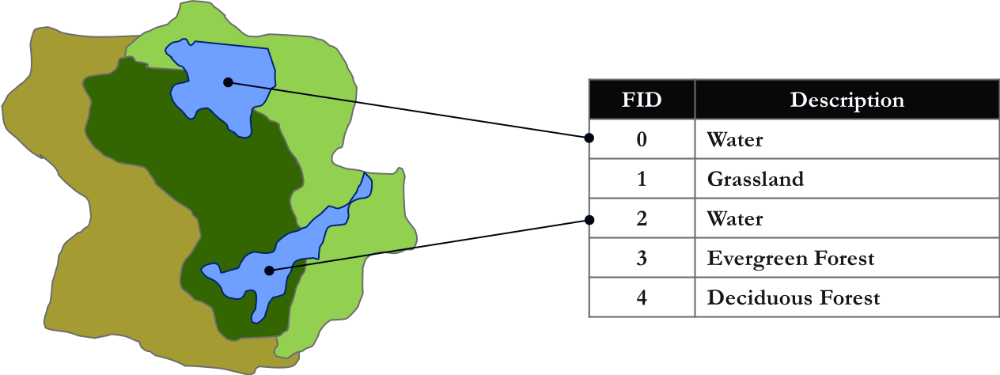
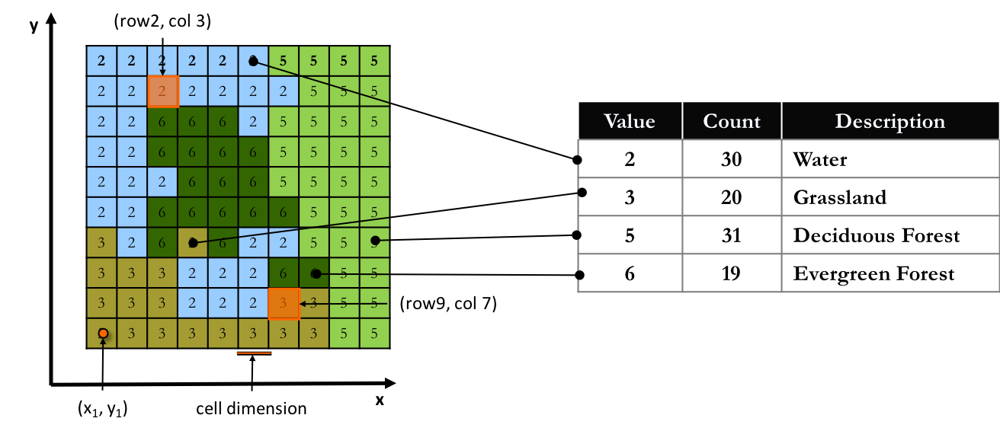
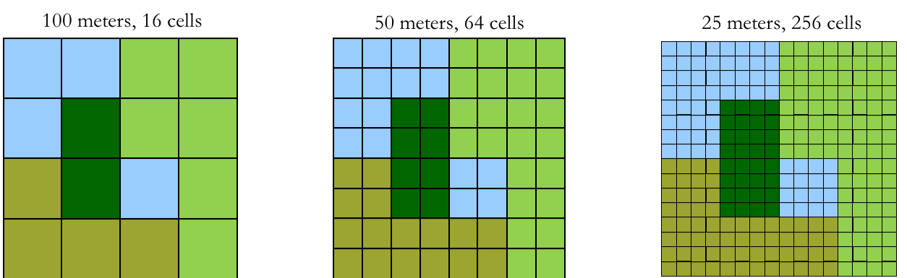
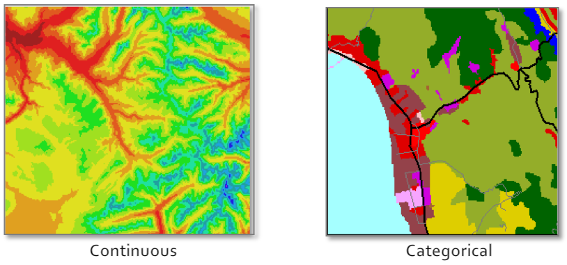

Geospatial Visualization
School of Architecture
Geospatial Data
- makes propositions: here this and this here *
- location + attributes
- points, ranges, classification, interpolation, statistics ...
- where will you get it?
- will you create it?
* Wood, Denis, and John Fels. 2008. The Natures of Maps. Chicago: The University of Chicago Press.
On Data
Qualitative - Quantitative
Non-numeric
Text, Image, Sound
Text, Image, Sound
Nominal, Ordinal, Interval, Ratio
Captured, Exhaust, Transient, Derived
Observed
Experimental,
Modeled
Experimental,
Modeled
Modeled
Technical Metadata
Technical Metadata
Non-Observed
Not "Raw"
Levels (more in a moment)
Levels (more in a moment)
Structured, Semi-structured, Unstructured
Irregular, Flexible
Nested, Trees, Tagged
Nested, Trees, Tagged
Data model, Schema,
Relational Database
Relational Database
Primary, Secondary, Tertiary
Incorporated
Re-used
Re-used
Created, Collected
Released
Truncated
Truncated
Indexical, Attribute, Metadata
Identifiers
Descriptions
Characteristics
Kitchin, R (2014). “Conceptualizing Data” in Kitchin, R. The Data Revolution. Washington DC: Sage.
http://uk.sagepub.com/sites/default/files/upm-binaries/63923_Kitchin_CH1.pdf
http://uk.sagepub.com/sites/default/files/upm-binaries/63923_Kitchin_CH1.pdf
Geospatial Data
|
|
|

|
Vector Data Model
- Points, Lines and Polygons
- all based on x,y coordinate pairs of geographic data
- lines and polygons are built from groups of points
- attribute data is linked to points, lines, or polygons (features)
- each feature is associated with a unique record in an attribute table

Vector Data Model
- Common File Formats
| Name | Extension | Source |
| shapefile | .shp * | ESRI |
| geojson | .json | open |
| geodatabase | .gdb | ESRI |
| google earth | .kml | open |
| autoCAD | .dxf .dwg | AutoDesk |
* .shp is the main file extension, others include: .shx .dbf .sbn .prj (and more - be careful!!)
Raster Data Model
- Grids of Rows and Columns
- each cell represents an x,y coordinate
- each cell has a specific size on the surface of the earth (scale)
- cell scale is based on the resolution of the image
- each cell has only one value (color or categorical)

Raster Data Model
- Resolution
- Original resolution of the collected data limits spatial accuracy
- Can’t improve by replicating cells to create smaller size cells
- Location implied; rounded to cell coordinate (center of cell)

Raster Data Model
- Types of Data
- Continuous
elevation, temperature - Categorical/Discrete
land use

Raster Data Model
- Common File Formats
| Name | Extension | Source |
| geotiff | .tiff .tif | open |
| jpg | .jpg | open |
| Arcinfo GRID | ESRI | |
| ERDAS imagine | .img | ERDAS |
* grids are stored in directories with many files all with the extension .adf; all files must be present.
and Slippy Data ...
- In ESRI you have several choices - add basemap
- for QGIS, google search for ...
- NOT suitable for printing!! The real alternative is good raster data
Getting Data
[ will likely be the hardest part of your project ]
[ will likely be the hardest part of your project ]
- survey instruments
- GPS
- cell phone
- existing maps and data
- remote sensing
- crowd sourcing
Survey Instruments
- door to door
- paper or digital?
- geocoding addresses
- ESRI ArcGIS Service uses "Credits"
pricing - Open source: google "online geocoder"
- QGIS with OpenStreetMap
- ESRI ArcGIS Service uses "Credits"

door to door survey, Las Flores, Colombia, Jan 2019
Global Positioning Systems (GPS)
- ground control points (GCPs)
- discrete entities
(trees, fire hydrants, underground access, etc) - walking the line
(routes and boundaries) - device accuracy?
- transfer of data?
- smart phones are very similar

A visual example of a 24 satellite GPS constellation in motion with the Earth rotating. Notice how the number of satellites in view from a given point on the Earth's surface changes with time. The point in this example is in Golden, Colorado, USA (39.7469° N, 105.2108° W).
Existing Maps and Data
- paper maps: scan, georeference, and trace
- online search terms??
- geospatial data stores/portals
- data quality?
- data documentation/provenance?
- spatial reference systems and projection transformations?
Remote Sensing
- satellite or aerial?
- custom acquisition?
- standard source?
- resolution?
- georeference process?
- data documentation/provenance?
- spatial reference systems and projection transformations?
Flying drone based surveys in Las Flores, Colombia
Crowd Sourcing
- humans as sensors
- citizens as sensors
- quality of data?
- sustainability?
- community engagement?
- PPGIS - Public Participatory GIS
Data Accuracy
- how collected?
- when collected?
- hidden assumptions?
- scale collected?
- does detail vary?